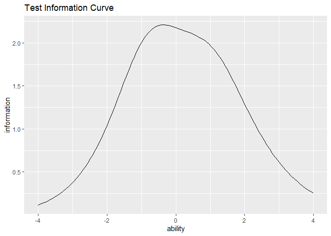

Exametrika is a powerful tool developed by Shojima(2022) for data analysis, available in Mathematica and an Excel Add-on. It has been developed as an R package at https://kosugitti.github.io/Exametrika/. This package, ggExametrika, is built to enhance the visualization capabilities of Exametrika pacakge using ggplot functions. It integrates seamlessly with the Exametrika package, providing beautiful and logically arranged plots for simplified data interpretation in R.
Reference
Shojima, Kojiro (2022) Test Data Engineering: Latent Rank Analysis, Biclustering, andBayesian Network (Behaviormetrics: Quantitative Approaches to Human Behavior, 13), Springer, https://amzn.to/42eNArd
Installation
You can install the development version of ggExametrika from GitHub with:
# install.packages("devtools")
devtools::install_github("kosugitti/ggExametrika")Example
In this package, you can create plots using ggplot2 directly by inputting the output results from Exametrika. The functions responsible for generating plots are named in the format plotxxx_gg. Additionally, there are options available to display multiple plots.
plotICC_gg Example
plotICC_gg is specifically designed for the output of IRT. Below is an example code using the Exametrika package. To run this code, you need the Exametrika package.
library(exametrika)
library(ggExametrika)
#> Loading required package: ggplot2
#> Loading required package: gridExtra
#>
#> Attaching package: 'ggExametrika'
#> The following objects are masked from 'package:exametrika':
#>
#> ItemInformationFunc, LogisticModel
result.IRT <- IRT(J15S500, model = 3)
#> iter 1 LogLik -3960.28
#> iter 2 LogLik -3938.35 iter 3 LogLik -3931.82 iter 4 LogLik -3928.68 iter 5
#> LogLik -3926.99 iter 6 LogLik -3926.05 iter 7 LogLik -3925.51 iter 8 LogLik
#> -3925.19 iter 9 LogLik -3925.01 iter 10 LogLik -3924.9 iter 11 LogLik -3924.83
#> iter 12 LogLik -3924.8 iter 13 LogLik -3924.77
result.IRT
#> Item Parameters
#> slope location lowerAsym PSD(slope) PSD(location) PSD(lowerAsym)
#> Item01 0.818 -0.834 0.2804 0.182 0.628 0.1702
#> Item02 0.860 -1.119 0.1852 0.157 0.471 0.1488
#> Item03 0.657 -0.699 0.3048 0.162 0.798 0.1728
#> Item04 1.550 -0.949 0.1442 0.227 0.216 0.1044
#> Item05 0.721 -1.558 0.2584 0.148 0.700 0.1860
#> Item06 1.022 -1.876 0.1827 0.171 0.423 0.1577
#> Item07 1.255 -0.655 0.1793 0.214 0.289 0.1165
#> Item08 0.748 -0.155 0.1308 0.148 0.394 0.1077
#> Item09 1.178 2.287 0.2930 0.493 0.423 0.0440
#> Item10 0.546 -0.505 0.2221 0.131 0.779 0.1562
#> Item11 1.477 1.090 0.0628 0.263 0.120 0.0321
#> Item12 1.479 1.085 0.0462 0.245 0.115 0.0276
#> Item13 0.898 -0.502 0.0960 0.142 0.272 0.0858
#> Item14 1.418 -0.788 0.2260 0.248 0.291 0.1252
#> Item15 0.908 -0.812 0.1531 0.159 0.383 0.1254
#>
#> Item Fit Indices
#> model_log_like bench_log_like null_log_like model_Chi_sq null_Chi_sq
#> Item01 -262.979 -240.190 -283.343 45.578 86.307
#> Item02 -253.405 -235.436 -278.949 35.937 87.025
#> Item03 -280.640 -260.906 -293.598 39.468 65.383
#> Item04 -204.884 -192.072 -265.962 25.623 147.780
#> Item05 -232.135 -206.537 -247.403 51.196 81.732
#> Item06 -173.669 -153.940 -198.817 39.459 89.755
#> Item07 -250.905 -228.379 -298.345 45.053 139.933
#> Item08 -314.781 -293.225 -338.789 43.111 91.127
#> Item09 -321.920 -300.492 -327.842 42.856 54.700
#> Item10 -309.318 -288.198 -319.850 42.240 63.303
#> Item11 -248.409 -224.085 -299.265 48.647 150.360
#> Item12 -238.877 -214.797 -293.598 48.160 157.603
#> Item13 -293.472 -262.031 -328.396 62.882 132.730
#> Item14 -223.473 -204.953 -273.212 37.040 136.519
#> Item15 -271.903 -254.764 -302.847 34.279 96.166
#> model_df null_df NFI RFI IFI TLI CFI RMSEA AIC CAIC
#> Item01 11 13 0.472 0.376 0.541 0.443 0.528 0.079 23.578 -22.805
#> Item02 11 13 0.587 0.512 0.672 0.602 0.663 0.067 13.937 -32.446
#> Item03 11 13 0.396 0.287 0.477 0.358 0.457 0.072 17.468 -28.915
#> Item04 11 13 0.827 0.795 0.893 0.872 0.892 0.052 3.623 -42.759
#> Item05 11 13 0.374 0.260 0.432 0.309 0.415 0.086 29.196 -17.186
#> Item06 11 13 0.560 0.480 0.639 0.562 0.629 0.072 17.459 -28.924
#> Item07 11 13 0.678 0.620 0.736 0.683 0.732 0.079 23.053 -23.330
#> Item08 11 13 0.527 0.441 0.599 0.514 0.589 0.076 21.111 -25.272
#> Item09 11 13 0.217 0.074 0.271 0.097 0.236 0.076 20.856 -25.527
#> Item10 11 13 0.333 0.211 0.403 0.266 0.379 0.075 20.240 -26.143
#> Item11 11 13 0.676 0.618 0.730 0.676 0.726 0.083 26.647 -19.736
#> Item12 11 13 0.694 0.639 0.747 0.696 0.743 0.082 26.160 -20.222
#> Item13 11 13 0.526 0.440 0.574 0.488 0.567 0.097 40.882 -5.501
#> Item14 11 13 0.729 0.679 0.793 0.751 0.789 0.069 15.040 -31.343
#> Item15 11 13 0.644 0.579 0.727 0.669 0.720 0.065 12.279 -34.104
#> BIC
#> Item01 -22.783
#> Item02 -32.424
#> Item03 -28.893
#> Item04 -42.737
#> Item05 -17.164
#> Item06 -28.902
#> Item07 -23.308
#> Item08 -25.250
#> Item09 -25.505
#> Item10 -26.121
#> Item11 -19.714
#> Item12 -20.200
#> Item13 -5.479
#> Item14 -31.321
#> Item15 -34.082
#>
#> Model Fit Indices
#> value
#> model_log_like -3880.769
#> bench_log_like -3560.005
#> null_log_like -4350.217
#> model_Chi_sq 641.528
#> null_Chi_sq 1580.424
#> model_df 165.000
#> null_df 195.000
#> NFI 0.594
#> RFI 0.520
#> IFI 0.663
#> TLI 0.594
#> CFI 0.656
#> RMSEA 0.076
#> AIC 311.528
#> CAIC -384.212
#> BIC -383.883If you want to plot ICC, input the stored results directly into the plotICC_gg function. You can also specify the range of the X-axis with a vector. If no specific range is provided, it will be plotted in the range from -4 to 4, and the function will return a list.
plots <- plotICC_gg(result.IRT)
# If you want to specify a range, provide a vector for the xvariable argument.
# plotICC_gg(result.IRT,xvariable = c(-7, 7))This way, the ICC for each item is stored in a list called plots. If you want to see the figures, you can specify it as follows. Also, if you want to draw multiple figures simultaneously, you can use the combinePlots_gg() function.
# Draw the ICC for Item5.
plots[5]
#> [[1]]
# Output multiple plots simultaneously (default is 6). Refer to the combinePlots_gg() documentation for specifying the figures.
combinePlots_gg(plots)
plotIIC_gg Example
You can also plot the Item Information Curve (IIC) similar to the plotICC_gg function. Input the output from the Exametrika package into the plotIIC_gg function as before.
plots <- plotIIC_gg(result.IRT)
# If you wish to specify a range, please provide a vector for the xvariable argument. The x-axis does not necessarily have to be symmetric around 0 for plotting.
# plotIIC_gg(result.IRT,xvariable = c(-5, 7))
# plotIIC_gg(result.IRT,xvariable = c(2, 9))In this method, the IIC for each item is stored in a list called plots. If you want to view the figures, you can specify it as follows. Also, if you wish to draw multiple figures simultaneously, you can use the combinePlots_gg() function.
# Draw the IIC for Item8.
plots[8]
#> [[1]]
# We will output multiple plots simultaneously (default is 6). This time, we will display 4 plots from the 8th to the 11th.
combinePlots_gg(plots, selectPlots = c(8:11))
plotTIC_gg Example
You can also plot the Test Information Curve using the same procedure. Subsequent functions may have differences in their arguments, but they are generally used in the same way. If you input data into a plotting function that does not fit the model, an error will occur, so please check the compatibility between the model and the plotting function.
plot <- plotTIC_gg(result.IRT)
# If you wish to specify a range, please provide a vector for the xvariable argument. The x-axis does not necessarily have to be symmetric around 0 for plotting.Since we are dealing with the information curve for a single test this time, only one plot will be generated.
# Draw the IIC for Item8.
plot